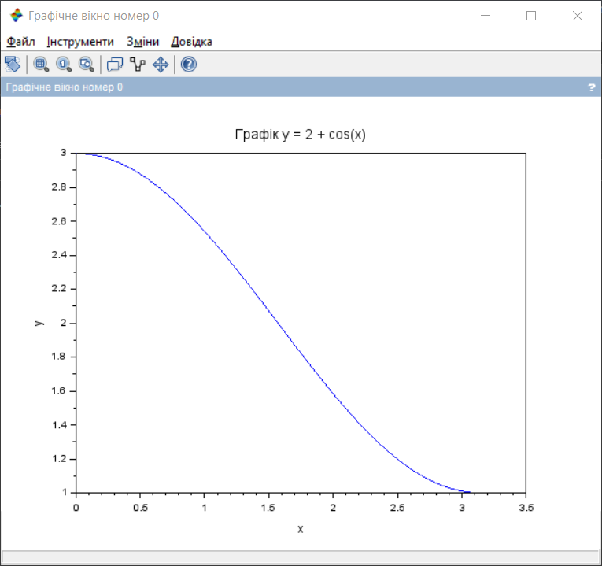
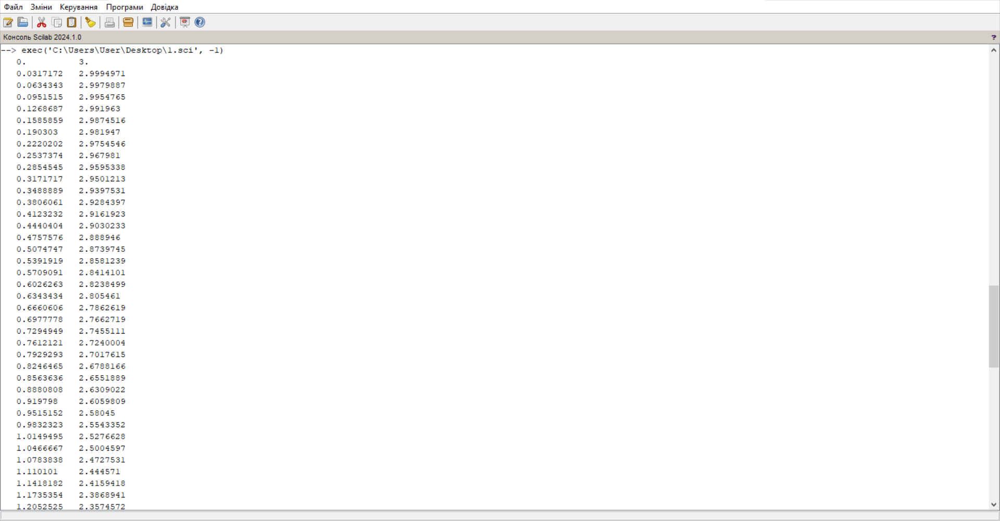

Моя Ознайомча практика 2024
Завдання 1.1.
Побудувати за допомогою Scilab графік функції згідно з варіантом на довільному відрізку.
Знайти значення функції у довільних точках, протабулювати (отримати таблицю значень) цієї функції на
відрізку [0;π], змінення значення змінної виконувати з довільним кроком.
Виконати перевірку отриманого результату шляхом побудови того самого графіка у MS Excel. Результати
порівняти.
ВАРІАНТ 9
Функція:\[y = 2 + cos(x)\]
Код Scilab:
x = linspace(0, 3.14, 100);
y = 2 + cos(x);
plot(x, y);
xlabel('x');
ylabel('y');
title('Графік y = 2 + cos(x)');
disp([x', y']);
Результат виконання програми у Scilab (рисунок 1 - 2):

Рисунок 1. Графік функції y = 2 + cos(x)

Рисунок 2. Табулювання функції на відрізку [0;π]Повне табулювання
тут
Таблиця Excel (рисунок 3):
Висновок
Порівнюючи отримані результаті у Scilab та Excel, графіки виходять ідентичними попри розбіжності у табулюваннях між двома програмами.